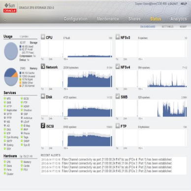

Infrastructure automation
Used Terraform to develop the provisioning workflow for the OCI-based ZFSSA release.
Engineering challengeBring repeatable instance creation into the service workflow.
Oracle · Production engineering · 2021–2024
Oracle · cloud infrastructure, media workflows, and ML tools
Across two internships and a full-time engineering role at Oracle, I built and improved systems that connect backend computation to a usable product: cloud storage on OCI, asynchronous media workflows, and configurable ML experiments. My work spans infrastructure automation, application logic, interfaces, and recovery.
01 · My scope
My responsibilities grew from an ML experimentation tool, to customer-facing media applications, to production storage and cloud infrastructure. In each setting, I worked across the boundary between what the system computes and how someone configures, inspects, or recovers it.
I contributed to ZFSSA-as-a-service on Oracle Cloud Infrastructure, working across service packaging, automated instance creation, storage-system issues, and operational interfaces.
I independently developed four applications for video upload, transcoding, website delivery, and URL refresh. The workflow connected cloud jobs and metadata to a web interface for reviewing the generated videos.
I worked on an internal tool that used previous acquisition data and ML methods to support acquisition suggestions. My contribution connected database access, search services, experiment configuration, and completion feedback.
02 · Architecture & implementation
Choose a system to see its workflow, the modules I worked on, and the engineering problem behind each component.
August 2023–November 2024
I contributed to ZFSSA-as-a-service on Oracle Cloud Infrastructure, working across service packaging, automated instance creation, storage-system issues, and operational interfaces.
Python · C/C++ · Terraform · OCI · Solaris · ZFS
Provisioning, service, and operations
Used Terraform to develop the provisioning workflow for the OCI-based ZFSSA release.
Engineering challengeBring repeatable instance creation into the service workflow.
Contributed to ZFS storage-system issues and Solaris release work, and helped package SMB as a service for customers.
Engineering challengeConnect the storage implementation, host environment, and customer-facing service.
Improved the ZFSSA browser interface and worked with Solaris CLI commands, SSH, and scripts.
Engineering challengeMake system operation and administrative actions easier to carry out.
Collaborated with the replication team on full-stack backup and data-recovery work.
Engineering challengeCoordinate changes across the service and the recovery workflow.
Contributions to cloud provisioning, customer-facing SMB service packaging, operational interfaces, and backup/recovery work within the ZFSSA core team.
May–August 2022
I independently developed four applications for video upload, transcoding, website delivery, and URL refresh. The workflow connected cloud jobs and metadata to a web interface for reviewing the generated videos.
Java / SDKs · JavaScript · jQuery · HTML · JSON · OCI NoSQL
Application and information flow
Two parallel processing paths
Configured tasks: 2 HLS · 3 MP4 · 2 thumbnail tasks
Created workflow definitions and saved their information in OCI NoSQL tables.
Engineering challengeKeep configuration and the associated workflow record connected.
Triggered processing for source-bucket videos using templates, generated destination-bucket outputs, and saved output metadata.
Engineering challengeCoordinate asynchronous jobs and the information needed to find their results.
Built a web application listing transcoded videos, with thumbnails and an animated thumbnail strip on hover.
Engineering challengeTurn processing output into something a person can quickly inspect.
Built a supporting application to track generated session tokens and regenerate expired ones; updated frontend URLs as workflow status changed.
Engineering challengeMaintain usable access as jobs finish and sessions expire.
Four connected applications for real customer workflows, covering cloud processing, output inspection, metadata, and refreshed access.
June–September 2021
I worked on an internal tool that used previous acquisition data and ML methods to support acquisition suggestions. My contribution connected database access, search services, experiment configuration, and completion feedback.
Java · Spring Boot · SQL / JPA · JavaScript / React · Python · Lucene · KNN
Experiment and feedback workflow
Queried source databases and implemented the corresponding DTO models and JPA repositories.
Engineering challengeExpose the data needed by the experiment workflow through application components.
Learned Spring Boot and developed index-search microservices as part of a parallel service structure.
Engineering challengeSeparate search and experiment operations into manageable services.
Built frontend and backend components for parameter-weight comparisons and an email notification when processing completed.
Engineering challengeLet users initiate experiments and receive completion feedback without monitoring every backend step.
The project entered internal business use, and I was recommended for a return offer. Changes I proposed reduced the recorded experiment runtime from about 40 minutes to about 20 minutes.
03 · Technical challenges
The media workflow separated Preview and Main processing. This gave output inspection a place in the pipeline while the larger processing workflow continued. I also connected individual videos to a hoverable thumbnail strip, so inspection did not require opening every result.
Workflow configuration, job progress, generated files, metadata, and frontend URLs change at different times. I implemented the workflow records and output metadata, tracked processing status, and refreshed frontend links. A supporting application tracked session tokens and regenerated them after expiry.
In cloud storage, I used Terraform for OCI instance creation and worked across browser, command-line, and scripted operations. In the earlier ML tool, I separated index-search work into Spring Boot services and connected experiment configuration to completion notifications. Both projects required making the steps around the computation explicit.
04 · Outcomes
05 · What I carry forward
Production engineering taught me to make intermediate states visible, give each component a clear responsibility, and think through what happens after an operation fails or a session expires. The preview workflow also made user effort concrete: a useful interface helps someone inspect the result without waiting for every background operation.
I bring these habits into robotics, where perception, calibration, planning, control, and execution feedback must work together. I am interested in systems that can identify the affected component after a mismatch and support a focused update.

06 · Experience record
My CV records the three Oracle roles, the technologies used, and the delivered applications and services.